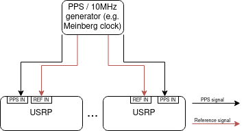

Physical & Network Setup¶
There are important preliminary steps to get the USRPs running, involving a physical and a network setup.
Network Setup¶
Ensure that the USRPs are in the same network. It is advised to change their hostname. This can be done as follows:
$ ssh <usrp-ip>
$ vi /data/network/hostname
Type in your desired hostname and restart the USRP.
We use ZeroMQ for communication between client and server. Therefore, the port 5555 should be opened for TCP packets.
Physical Setup¶
- Synchronization
The USRPs are synchronized via PPS signals and a 10 MHz reference radio signal. As a generator, we use a Meinberg Clock. Connect their PPS outs to the PPS in` of the USRP and the 10MHz ooutput to REF IN. Ensure that the cables are the same length!
- Antennas
Note, that receiver ports of the USRP receive signals, although weak, even if no antenna is connected!
TX/RX0 ports of the USRP are transmit antennas by default!
if you connect two antennas via cable (to mitigate effects of the channel), make sure to add add 30dB attenuator at transmit side